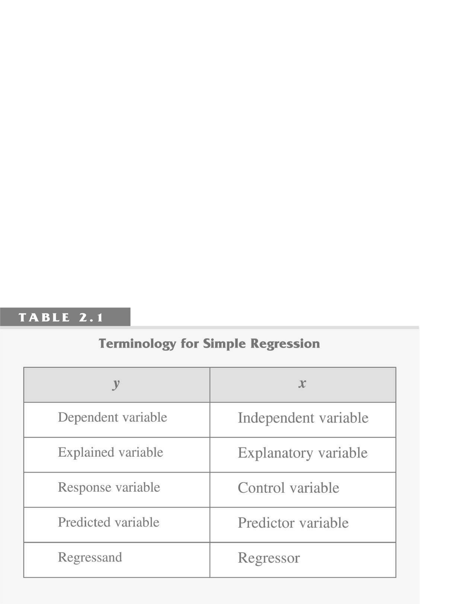
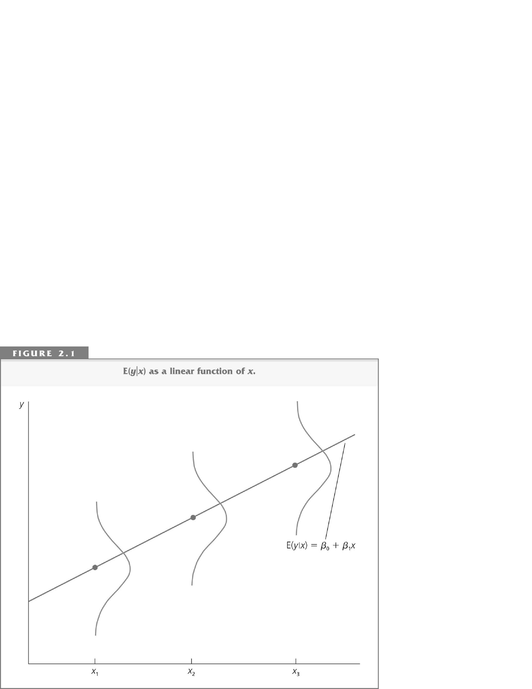
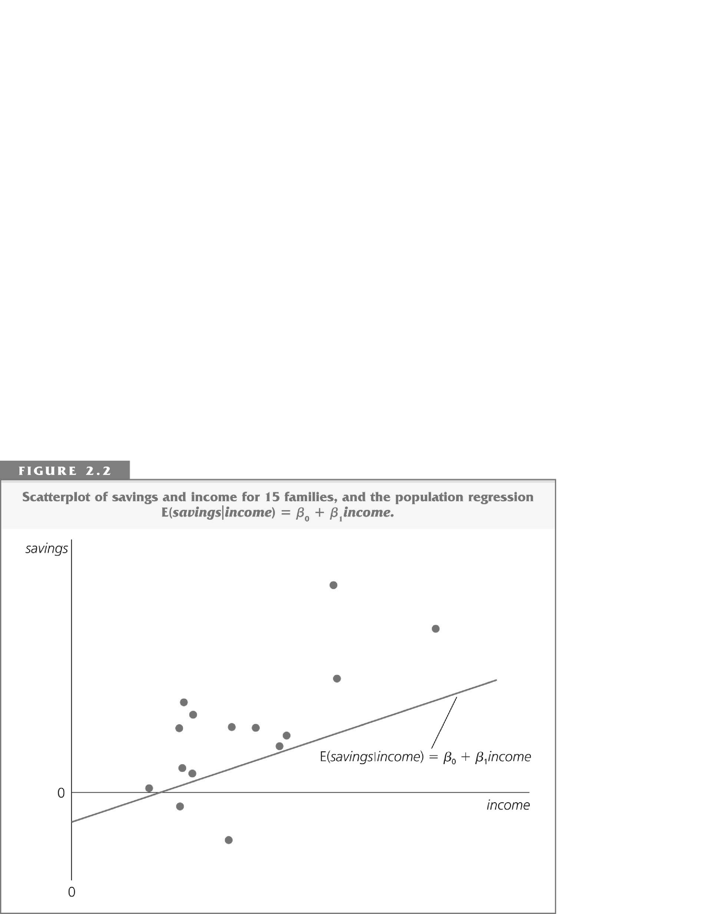
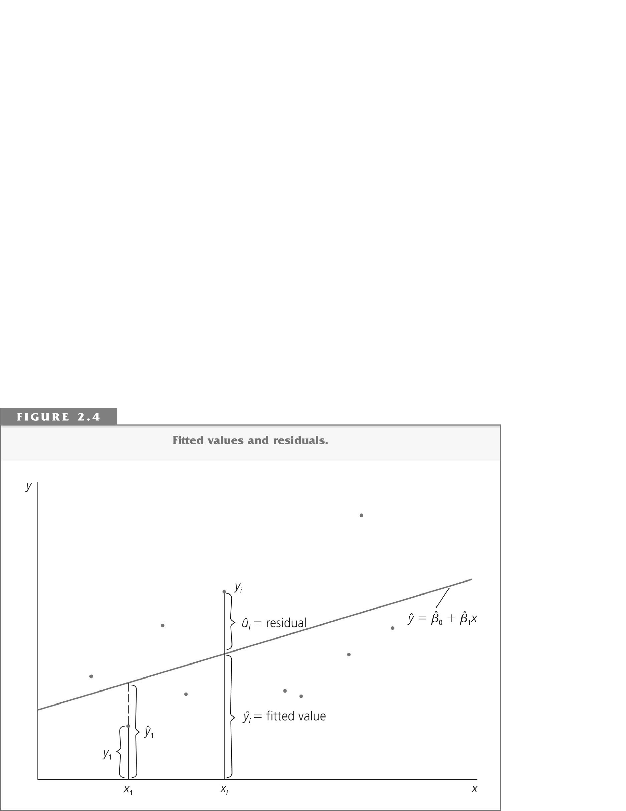
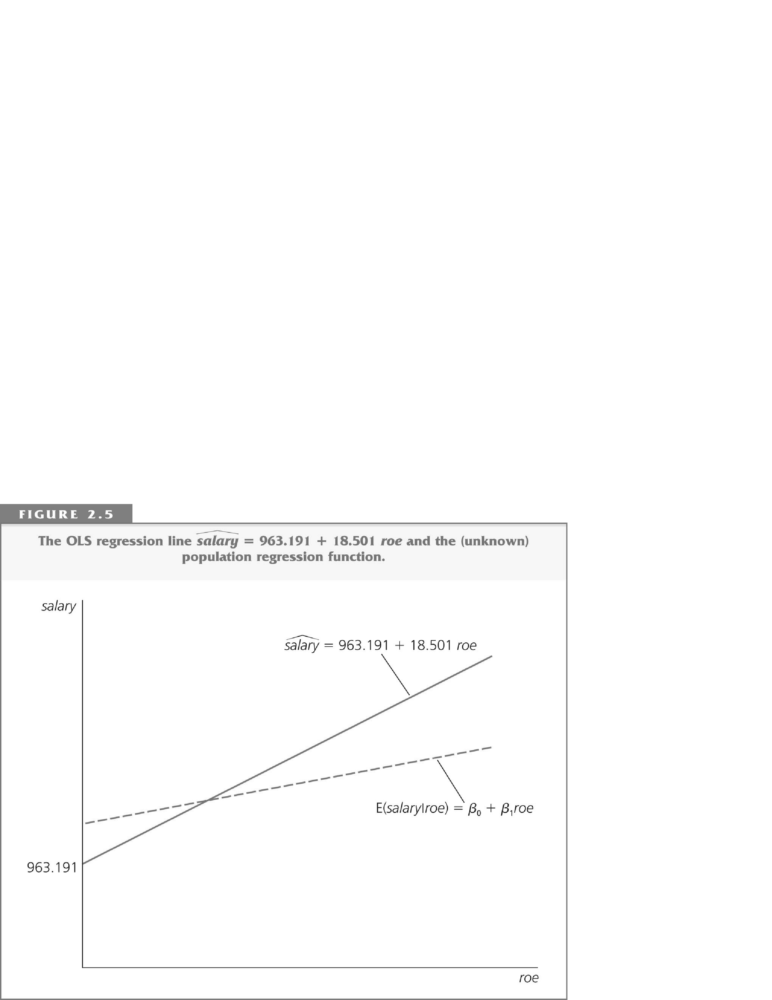

Lecture 3: Simple Linear Regression and OLS
Economics 326 — Introduction to Econometrics II
Introduction
- The simple linear regression model is used to study the relationship between two variables.
- It has many limitations, but nevertheless there are examples in the literature where the simple linear regression is applied (e.g., stock returns predictability).
- It is also a good starting point to learning the regression technique.
Definitions

Sample and population
The econometrician observes random data:
observation dependent variable regressor 1 Y_{1} X_{1} 2 Y_{2} X_{2} \vdots \vdots \vdots n Y_{n} X_{n} A pair X_{i}, Y_{i} is called an observation.
Sample: \left\{ \left( X_{i},Y_{i}\right) : i=1,\ldots,n\right\}.
The population is the joint distribution of the sample.
The model
We model the relationship between Y and X using the conditional expectation: E\left( Y_{i}|X_{i}\right) = \alpha + \beta X_{i}.
Intercept: \alpha = E\left( Y_{i}|X_{i}=0\right).
Slope: \beta measures the effect of a unit change in X on Y: \begin{aligned} \beta &= E\left( Y_{i}|X_{i}=x+1\right) - E\left( Y_{i}|X_{i}=x\right) \\ &= \left[ \alpha + \beta (x+1)\right] - \left[ \alpha + \beta x\right]. \end{aligned}
Marginal effect of X on Y: \beta = \frac{dE\left( Y_{i}|X_{i}\right)}{dX_{i}}.
The effect is the same for all x.
The model
\alpha and \beta in E\left( Y_{i}|X_{i}\right) = \alpha + \beta X_{i} are unknown.
Residual (error): U_{i} = Y_{i} - E\left( Y_{i}|X_{i}\right) = Y_{i} - \left( \alpha + \beta X_{i}\right). U_{i}’s are unobservable.
The model: \begin{aligned} Y_{i} &= \alpha + \beta X_{i} + U_{i}, \\ E\left( U_{i}|X_{i}\right) &= 0. \end{aligned}
Functional form
- We consider a model that is linear in the coefficients \alpha,\beta: Y_{i} = \alpha + \beta X_{i} + U_{i}.
- The dependent variable and the regressor can be nonlinear functions of some other variables.
- The most popular function is \log.
Functional form: the log-linear model
Consider the following model: \log Y_{i} = \alpha + \beta X_{i} + U_{i}.
In this case, \begin{aligned} \beta &= \frac{d\left( \log Y_{i}\right)}{dX_{i}} \\ &= \frac{dY_{i}/Y_{i}}{dX_{i}} = \frac{dY_{i}/dX_{i}}{Y_{i}}. \end{aligned}
\beta measures percentage change in Y as a response to a unit change in X.
In this model, it is assumed that the percentage change in Y is the same for all values of X (constant).
In \log \left( \text{Wage}_{i}\right) = \alpha + \beta \times \text{Education}_{i} + U_{i}, \beta measures the return to education.
Functional form: the log-log model
Consider the following model: \log Y_{i} = \alpha + \beta \log X_{i} + U_{i}.
In this model, \begin{aligned} \beta &= \frac{d\log Y_{i}}{d\log X_{i}} \\ &= \frac{dY_{i}/Y_{i}}{dX_{i}/X_{i}} = \frac{dY_{i}}{dX_{i}}\frac{X_{i}}{Y_{i}}. \end{aligned}
\beta measures elasticity: the percentage change in Y as a response to 1% change in X.
Here, the elasticity is assumed to be the same for all values of X.
Example: Cobb-Douglas production function: Y=\alpha K^{\beta_{1}}L^{\beta_{2}} \Longrightarrow \log Y=\log \alpha + \beta_{1}\log K + \beta_{2}\log L (two regressors: log of capital and log of labour).
Orthogonality of residuals
The model: Y_{i} = \alpha + \beta X_{i} + U_{i}.
We assume that E\left( U_{i}|X_{i}\right) = 0.
E U_{i} = 0. E U_{i} \overset{\text{Law of Iterated Expectation}}{=} E\,E\left( U_{i}|X_{i}\right) = E\,0 = 0.
Cov\left( X_{i},U_{i}\right) = E X_{i}U_{i} = 0. \begin{aligned} E X_{i}U_{i} &\overset{\text{Law of Iterated Expectation}}{=} E\,E\left( X_{i}U_{i}|X_{i}\right) \\ &= E\left[ X_{i} E\left( U_{i}|X_{i}\right) \right] = E\left[ X_{i} 0 \right] = 0. \end{aligned}
The model
Y_{i} = \underbrace{\alpha + \beta X_{i}}_{\text{Predicted by } X} + \underbrace{U_{i}}_{\text{Orthogonal to } X}

Estimation problem

Problem: estimate the unknown parameters \alpha and \beta using the data (n observations) on Y and X.
Method of moments
We assume that \begin{aligned} E U_{i} &= E\left( Y_{i} - \alpha - \beta X_{i}\right) = 0. \\ E X_{i}U_{i} &= E X_{i}\left( Y_{i} - \alpha - \beta X_{i}\right) = 0. \end{aligned}
An estimator is a function of the observable data; it can depend only on observable X and Y. Let \hat{\alpha} and \hat{\beta} denote the estimators of \alpha and \beta.
Method of moments: replace expectations with averages. Normal equations: \begin{aligned} \frac{1}{n}\sum_{i=1}^{n}\left( Y_{i} - \hat{\alpha} - \hat{\beta} X_{i}\right) &= 0. \\ \frac{1}{n}\sum_{i=1}^{n}X_{i}\left( Y_{i} - \hat{\alpha} - \hat{\beta} X_{i}\right) &= 0. \end{aligned}
Solution
Let \bar{Y}=\frac{1}{n}\sum_{i=1}^{n}Y_{i} and \bar{X}=\frac{1}{n}\sum_{i=1}^{n}X_{i} (averages).
\frac{1}{n}\sum_{i=1}^{n}\left( Y_{i} - \hat{\alpha} - \hat{\beta}X_{i}\right) = 0 implies \begin{aligned} \frac{1}{n}\sum_{i=1}^{n}Y_{i} - \frac{1}{n}\sum_{i=1}^{n}\hat{\alpha} - \hat{\beta}\frac{1}{n}\sum_{i=1}^{n}X_{i} &= 0 \text{ or} \\ \bar{Y} - \hat{\alpha} - \hat{\beta}\bar{X} &= 0. \end{aligned}
The fitted regression line goes through the averages.
\hat{\alpha} = \bar{Y} - \hat{\beta}\bar{X}.
Solution
- \hat{\alpha} = \bar{Y} - \hat{\beta}\bar{X} and therefore \begin{aligned} 0 &= \frac{1}{n}\sum_{i=1}^{n}X_{i}\left( Y_{i} - \hat{\alpha} - \hat{\beta} X_{i}\right) \\ &= \sum_{i=1}^{n}X_{i}\left( Y_{i} - \left( \bar{Y} - \hat{\beta}\bar{X}\right) - \hat{\beta}X_{i}\right) \\ &= \sum_{i=1}^{n}X_{i}\left[ \left( Y_{i} - \bar{Y}\right) - \hat{\beta}\left( X_{i} - \bar{X}\right) \right] \\ &= \sum_{i=1}^{n}X_{i}\left( Y_{i} - \bar{Y}\right) - \hat{\beta}\sum_{i=1}^{n}X_{i}\left( X_{i} - \bar{X}\right). \end{aligned}
Solution
0 = \sum_{i=1}^{n}X_{i}\left( Y_{i} - \bar{Y}\right) - \hat{\beta}\sum_{i=1}^{n}X_{i}\left( X_{i} - \bar{X}\right) \text{ or} \hat{\beta} = \frac{\sum_{i=1}^{n}X_{i}\left( Y_{i} - \bar{Y}\right)}{\sum_{i=1}^{n}X_{i}\left( X_{i} - \bar{X}\right)}.
Since \begin{aligned} \sum_{i=1}^{n}X_{i}\left( Y_{i} - \bar{Y}\right) &= \sum_{i=1}^{n}\left( X_{i} - \bar{X}\right) \left( Y_{i} - \bar{Y}\right) = \sum_{i=1}^{n}\left( X_{i} - \bar{X}\right) Y_{i} \text{ and} \\ \sum_{i=1}^{n}X_{i}\left( X_{i} - \bar{X}\right) &= \sum_{i=1}^{n}\left( X_{i} - \bar{X}\right)\left( X_{i} - \bar{X}\right) = \sum_{i=1}^{n}\left( X_{i} - \bar{X}\right)^{2} \end{aligned} we can also write \hat{\beta} = \frac{\sum_{i=1}^{n}\left( X_{i} - \bar{X}\right) Y_{i}}{\sum_{i=1}^{n}\left( X_{i} - \bar{X}\right)^{2}}.
Fitted line
- Fitted values: \hat{Y}_{i} = \hat{\alpha} + \hat{\beta}X_{i}.
- Fitted residuals: \hat{U}_{i} = Y_{i} - \hat{\alpha} - \hat{\beta}X_{i}.

True line and fitted line
- True: Y_{i} = \alpha + \beta X_{i} + U_{i}, E U_{i} = E X_{i}U_{i} = 0.
- Fitted: Y_{i} = \hat{\alpha} + \hat{\beta} X_{i} + \hat{U}_{i}, \sum_{i=1}^{n}\hat{U}_{i} = \sum_{i=1}^{n}X_{i}\hat{U}_{i} = 0.

Ordinary Least Squares (OLS)
Minimize Q\left( a,b\right) = \sum_{i=1}^{n}\left( Y_{i} - a - bX_{i}\right)^{2} with respect to a and b.
Derivatives: \begin{aligned} \frac{dQ\left( a,b\right)}{da} &= -2\sum_{i=1}^{n}\left( Y_{i} - a - bX_{i}\right). \\ \frac{dQ\left( a,b\right)}{db} &= -2\sum_{i=1}^{n}\left( Y_{i} - a - bX_{i}\right) X_{i}. \end{aligned}
First-order conditions: \begin{aligned} 0 &= \sum_{i=1}^{n}\left( Y_{i} - \hat{\alpha} - \hat{\beta}X_{i}\right) = \sum_{i=1}^{n}\hat{U}_{i}. \\ 0 &= \sum_{i=1}^{n}\left( Y_{i} - \hat{\alpha} - \hat{\beta}X_{i}\right) X_{i} = \sum_{i=1}^{n}\hat{U}_{i}X_{i}. \end{aligned}
Method of moments = OLS: \hat{\beta} = \frac{\sum_{i=1}^{n}\left( X_{i} - \bar{X}\right) Y_{i}}{\sum_{i=1}^{n}\left( X_{i} - \bar{X}\right)^{2}} \quad \text{and} \quad \hat{\alpha} = \bar{Y} - \hat{\beta}\bar{X}.